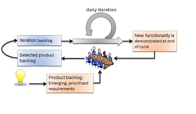

Why Use Current Software Components?
Why Use Current Software Components?
Often, teams discuss if their digital product should upgrade to the current version of open-source or commercial used components.
The same discussion arises for development tools and programming language versions.
I have a strong opinion about upgrades. You should always use the current version of all components included in your product. The only discussion is the timely when and never the if.
Be realist, if your product is successful, you have to upgrade before the components are obsolete. Otherwise, your application will become a geriatric solution.
Organizations often forget the liability of using older versions of components with known and published security flaws [1].
Below I provide you with arguments why you should always update all components in a timely fashion.
Security and Governance
Social responsibility and liability considerations require your product to be immune to published attacks. Your company shall provide reasonable protection to all your customers. Therefore, you always include security patches in your product in a timely manner. Other approaches are deeply unprofessional and unethical. In some countries, you are liable if you do not update your software to avoid known security attacks.
You should use actual Java JDK and JVM version because the community is concentrating their effort on the latest version. Oracle only provides public support for the latest two Java versions, e.g. in January 2018, Java 9 and Java 8 are officially supported. Java 8 support will stop end of September 2018, older versions are no more publicly maintained.
If, for some reasons, you are using an older commercially but no more publicly supported JDK, you must sign a support contract with the Oracle company and pay for it. You cannot use deprecated JDK versions because nobody provides security fixes on these versions - e.g. Java 6 commercial support ended in December 2017 –.
If you include a deprecated JDK / JVM in your product, you willingly endanger your users and shall be liable for their losses.
Governments started to realize how unprofessional organizations are working. Recommendations and laws are grafted to force better security [2].
Upgrades and Genuine Improvements
The component developers put tremendous effort to improve the non-functional aspects of their products. Performance and scalability improvements between Java versions are impressive. You shall not hinder your own customers to rip these low-hanging fruits.
Actual versions of standards - Unicode, HTTP protocol, time zones - help eliminate incompatibilities and subtle errors from use cases. Having older versions will hinder you to support actual timezone changes or extensions in the Unicode standard.
Training and Community Support
Good training and associated certification are only available for actual versions of languages, frameworks or library. You will not find any training for Ada, Apache server 1.x, or any object-oriented database.
The articles in Stack Overflow and the community always cover the current version of components. So you are on your own for support or code examples for older versions of libraries.
Hidden Cost of Backport
Writing code for older versions of libraries, frameworks or runtimes means backporting to older application interfaces and features. For example, if you do not have access to auto-closable resources, you have to write your own framework and software checks guarantying closing system resources. You should always free system resources in your application. The literature states this is neither easy nor error free. It is the root reason why such a feature was added to Java.
Teams often forget the consequences of back porting. Later, when you adopt a more modern version of your dependencies, you have to remove all this now spurious code and migrate to the build-in concept. Otherwise, the code is no more maintainable and changes are error-prone.
In other words, you have to twice work when backporting, once to build it in, and a second time to later remove it. This solution is certainly not the most economical one.
Motivation of Team
No professional developer wants to write source code using JDK 7 or older versions. They want to develop using modern and powerful constructs such as lambda, modules, HTTP/2. I would state that not using such constructs disqualifies you as a professional engineer.
We observed how whole teams become demotivated because a huge part of their daily work was backporting to old environments.
I understand that geriatric software solutions do not allow you to use the latest versions. It is time to bury such products and to go on. The only open question is the date of the burial. Do not wait too long, decomposition is never nice to smell.
Maintaining or extending software based on old versions of libraries is just throwing money out the window. You need a solid basement to build on.
Clean Your Desk and Define New Year Improvements
Clean Your Desk and Define New Year Improvements
It is Christmas time. Clean your desk and the content of your workstation. Upgrade your tools and your development environment to the actual version.
It is time to add automated build pipelines, TDD, ATDD, and Docker to your toolbox. Embrace agile approaches.
Work focused and avoid overtime. Prioritize outcomes instead of outputs. Enjoy family life, practice sport, and pursue continuous training.
Clean Your Desk
Digitalize Your Office
It is time to sell the last fax device in your office and plan to remove your big printer. Burn your paper documentation and discard your folders. Please store all the information digitally and have an effective search application in your company. Use Wiki to publish company data and store knowledge for all collaborators.
Have a professional handset and a good camera for video conferences.
Put all your documents on your company drive and index all this information. Finding relevant data by keyword searching is a huge gain of time. Another advantage is no more backup of workstations and notebooks. All mission critical information is always on the company’s drives.
Socialize with your Team
Organize a real team room. Colocate all your team members, design on big whiteboards. Please use analog Scrum boards. You need big whiteboards, analog Scrum boards, meeting corners.
Restart your brown bag training program. A Friday beer event is always a welcome event.
Celebrate success after each major release of your products. Another gain is tension just disappears when people talk around snacks and drink together a glass of wine.
Upgrade your Toolbox
As a Java developer, it is time to use state of the industry tools and improve your daily work
-
Java 9 JDK - If you are still working with Java 7 or earlier, you are a laggard
-
Java 8 public support will end middle of next year.
-
Java 10 shall be available next year. The early releases are already online. Download them and try the new features. The local variable declarations are a huge improvement.
-
You are a laggard and security danger if you are still using Java 6 or earlier.
-
-
Gradle
-
Build, deliver, and deploy your solution with one keystroke.
-
-
Continuous integration, delivery and deployment pipelines.
-
Never again configure manually a deployment by hand.
-
-
Test environments with Docker
-
Never say again, it is working on my machine.
-
-
Modern IDE such as IntelliJ IDEA
-
Very good Gradle support.
-
Very good JUnit 5 support.
-
Alt-Enter anywhere brings up context-sensitive options. Run a test, create a test, create subclass, convert to closure, generate missing test methods, remove explicit type, split into declaration and assignment, introduce local variable. The suggestions are limitless.
-
Great Java 8 support, suggesting lambda notation where appropriate!
-
Even displaying anonymous inner class usage (collapsed) as if it was written using a lambda expression.
-
-
Quality with PMD, FindBugs, SonarLint, or the build-in rules of IntelliJ
-
Banish Flash from your workstation
New Year Improvements
Sustainable Pace
Agile approaches state you should work at a sustainable pace, forty hours a week. Avoid working overtime during the evenings or weekends.
Enjoy family time, practice sport, give back to the community.
Work with your team, ideally collocated in a team room. Face2Face exchanges and pair working - pair design, pair review, pair programming, pair checkin - are training on the job occasions.
Hone your Craftsmanship
Here are some suggestions to hone your craftsmanship
-
Practice coding dojos to improve your programming skills.
-
Read good technical books, at least one book per quarter.
-
Learn new shortcuts and plugins for your favorite IDE.
-
Improve the agile, lean, Scrum, LeSS approaches in your department.
-
Refactor daily code and practice clean-code.
-
Become a master of Git.
-
Increase self-awareness and work on your soft skills, teamwork shall improve.
I wish you success, fulfillment, happiness and fun.
Impediment List is of Tremendous Importance
Impediment List is of Tremendous Importance
An impediment is any aspect hindering the team or a company to deliver value and higher quality to the customers.
An agile organization continuously removes impediments. It is one of her major activities. This activity is ongoing and can never be completed.
Impediments resolution is Kaizen 改善, a key technique to lean, agile and Scrum approaches. The translation is change for better.
Often agile organizations forget to aggressively identify and resolve impediments.
We provide hints to improve your Kaizen process.
Identify Impediments
The first step is to identify and classify your impediments. There are always impediments; solving them will increase the effectivity of your department. You shall
-
Make impediments visible. Publish them on the Scrum board for all to be seen. Use diagrams and colors. Do not hide them in an issue tracker or a spreadsheet.
-
Raise issues early and often. The daily stand-up meeting is an ideal platform. Ask each day if impediments jeopardize the sprint goal.
-
Feelings matter. Let everybody identify impediments. An impediment is a dysfunction of the organization, never a flaw in an individual.
-
Aim for effectivity and quality. Efficiency is less important.
-
Find out the root causes, discuss the 5 Whys over how.
-
Provide safe to fail environment. Use the Plan-Do-Check-Adapt loop to implement your experiments to improve,
-
Life the Scrum values. Lead by example: Focus, Commitment, Transparency, Openness, Respect, and Courage.
Solve Impediments
The real work of the agile coach is eliminating impediments.
The goal of resolving impediments is often higher internal quality. Internal quality is the sole responsibility of the Scrum Team.
Work on improving external quality and improved effectivity. A delighted customer will order more.
Start with short-term wins to prove the organization that it is worth the effort.
Allocate time and resources in each sprint to resolve a few high prioritized impediments. Please define measurements Key Performance Indicators KPI. Find out if the solution solves the root cause of the problem.
All team members are responsible for solving team impediments. The Scrum master is responsible for coaching the team and helps solve overall impediments rooted in the organization.
Track Impediments
The identification step is the easy one, do not forget to track impediments and their resolution. You have a serious problem
-
If the impediment backlog lives in the mysterious black book of the Scrum master.
-
If your impediment backlog does not change.
-
If your impediment backlog is empty.
-
If you have an impediment backlog with a growing number of active impediments.
-
If the Scrum master resolves all the impediments himself.
-
If you do not solve at least one impediment each sprint. It is a mandatory part in the Scrum Guide 2018 version.
As a Scrum coach, Scrum master or Scrum team member you should reflect upon the above statements at least monthly. Otherwise, you are just pretending. Remember
Doing Agile instead of being Agile is just Cargo Cult.
Agile Approaches and Fix Price Contracts
Agile Approaches and Fix Price Contracts
The difficulty with contracts is that it is about trust. Here lays the roots for success or disaster.
If no trust exists, the henceforth dreaded process is established. After tough negotiations, the development team starts but does not collaborate with the customer. They just build what is written in outdated requirements. A subpar solution is shipped and the relationship with the customer is deeply damaged. We can do better. We shall collaborate, trust each other and create an awesome product. This is the essence of being agile. How shall we be agile and work the lean way in a contractual environment? By contractual I mean no time and material approach.
We shall
-
Define and rapidly realize the minimum viable product MVP. This product defines success and builds trust. Use this MVP as anchor during contract negotiation.
-
Prioritize Money, Time, and Scope. The most important item - and it can only be one - is the basis for the agile contract,
-
Service is the essence of software application development. So your agile contract shall be a service contract. Select a rolling contract approach to deeply involve both sides.
-
Fail early and learn. The disputes between contractors and customers shall stay reasonable due to the smaller amounts in play.
Contract
Initial success is the timely realization and deployment of the MVP. The MVP is the anchor of trust. Use rolling contracts to extend the product.
- Priority on Money
-
Frame cost as investment and discuss value with the customer, not just money.
Fix the budget - money dimension - and have some tentative milestones. We must invest to prioritize the stories and talk about your MVP. Often nice to have functions are never realized. - Priority on Time
-
Sometimes, it is not about the cost. Instead, there is a deadline, like the end of the fiscal year.
Fix the product milestones - time dimension -. We still must define a budget and prioritize the stories. The must stories shall be implemented before deadline and budget can be extended to respect the deadline. - Priority on Scope
-
And in other cases, the scope actually is quite defined, and both money and time are flexible. In these cases, it makes sense to fix the scope variable.
Fix the functionality - scope dimension -. Budget overrun and delays are possible. Defining the scope in advance is less agile. You assume you already know everything about the product to build.
The contract defines a service. The delivered product is the output of the service contract but not the sole item of the contractual binding.
Tracking
Signing a contract is the easy part. Now you must track progress, manage changes, and reach the agreed goals in a timely and economical way.
-
Commit in trust, training, and decision-making. Train your people and customer’s representatives,
-
Deliver incrementally every few weeks to prove progress and cement trust,
-
The more trust you build, the less escalation you will have during the product,
-
Have rolling planning, budgeting, and tracking. You shall gain visibility of progress, transparent costs, and tentative end for fulfilling the contract,
-
How do you track and document changes?
-
How do you inform your stakeholders about contract changes?
The later questions are solved differently based on the level of trust between the contractor and the customer. Try to avoid a full-fledged change management process and systematic escalations.
Work Approach
The Agile Manifesto states
Individuals and interactions over processes and tools
Working software over comprehensive documentation
Customer collaboration over contract negotiation
Responding to change over following a plan
2001
Here the approach to define and finalize a fixed price agile contract. Please remember the manifesto, it is all about collaboration and responding to change.
-
Create the product vision and initial backlog together. Write good epics and identify main topics - topics identify the minimum outcomes to maximize solution value -,
-
Commit to the vision and defined MVP,
-
Define a budget for the product,
-
Define tentative deadlines,
-
Refine some epics and write the stories. Keep them concise and clear,
-
-
Estimate the product backlog together with the customer,
-
It is all about cooperation and adaptability,
-
Use relative estimates to classify stories, use story points,
-
Talk about business value and implementation risks,
-
-
Finalize the contract, What happens if costs overruns happen -. We suggest sharing the costs and define the percentage each party shall pay, if the supplier pays 0% it is a time and material contract. If the supplier pays 100% it is a fix price contract. Aim for 50% -,
-
Define a checkpoint to validate the estimates and hypotheses,
-
Define exit criteria and exit points for both parties,
-
State governance how to simplify scope and stories to respect budget. State and agree upon escalation process if no agreement is found,
-
-
Invite the customer to the Scrum sessions. Sell the entire Scrum team and not individuals,
-
Sell releases containing a small set of sprints,
-
Deliver and deploy the build solution,
-
Have the end users use the deployed product.
-
The Scrum master, the product owner and the team shall perform these activities. Never use external consultants or business analysts. The ones writing the stories and estimating them shall implement them.
Fallback
Hide the fact you are working the agile way. Don’t tell the customer you are working any differently to normal. Clearly state internally why you do it and why your corporate values allow this solution.
Estimate and plan the work as you would normally, sign a perfectly normal contract. UseAgile techniques and especially eXtreme Programming to improve delivery. You need to have a don’t ask, don’t tell type policy because basically you are lying.
Conclusion
The most successful projects I worked for had selected the money dimension seen as investment budgets. Goals correction were communicated early and the contract amended accordingly. We avoided complicated and expensive change request processes.
The build products were very successful. We respected the agreed budget and were timely. The dynamic was in the scope definition. We delivered early and often high quality increments so the end users could adjust their expectations and refine their needs.
Your Management Job in an Agile Environment
Your Management Job in an Agile Environment
Introduction
You develop your software products using agile approaches. You are doing Scrum, Kanban, Scrumban, Lean Software Development, or LeSS.
Your collaborators start asking questions about their organisation, management roles, and critique the internal processes. How employee yearly evaluation, bonus evaluation – work? You hear strange statements such Be agile, do not do agile.
You as a manager realise you have to describe your role in an agile environment. What does it mean? Please read first this blog post describing What is an Agile Company?
If you have time, read the post Why Scrum Masters are not Administrators?
Another one is about So Called Agile and Scrum Failures. Upon reading, you shall have a deeper understanding of how to describe your role as a manager in an agile environment.
We will first discuss your work environment. Second, the characteristics of people you are working with shall be sketched. Finally, we will sketch your job description.
Complex Systems and Empiricism
The development organization of a software solution is a complex system. This means that nobody understands the rules. You cannot implement a measure and be certain it will improve the whole system. If you want to implement lasting improvements, you must:
- Provide transparency
-
The more you and your collaborators know the better your decisions are. All information shall be available to all participants, including financial and marketing data.
- Experiment with improvement
-
Inspection and adaptation are keys; processes and value streams shall constantly be improved. Take the lean approach: Relentlessly eliminate waste and increase the value stream.
- Establish long-living teams
-
Teams are the backbone of your company; people are human beings not resources.
Collaborators and their Needs
Knowledge workers are the collaborators you hire in this millennium. They are smart, motivated and better qualified than you are.
It doesn’t make sense to hire smart people and then tell them what to do. We hire smart people, so they can tell us what to do.
A manager working with knowledge workers has understood the above quotes and
-
Believe in the X vs Y theory. You provide safety to all your people and truly respect them. People only perform if you provide psychological safety. The test is Do you compliment every collaborator you are working with at least once a week.
-
Provide a purpose, give autonomy, and let them achieve mastery. The test is Continuous learning and improvement through trial and error.
-
Promote exclusively intrinsic motivators. The test is No bonus or monetary incentive system exits in the company.
-
Establish a work environment where collaborators work in flow. The test is No email or phone answering rules in the company; no mandatory overtime.
The agile and lean principle Plan-Do-Check-Adapt applies to agile managers as well.
-
Are you catalyzing organization change to embrace agile values, starting with a culture of value delivery?
-
Do you provide significant organizational roadblock removal for agile teams?
-
Do they perceive you as a coach and leader more than as a manager?
-
Do you use metrics to support teams improve their performance and to help senior leaders understand how to improve value delivery?
-
Are you helping your partners create lean processes to synchronize with agile teams?
-
How are suppliers encouraged to work in an agile way?
Let Go and Delegate
Delegate and empower your team. As a manager, you shall reconsider which activities are your responsibility. An agile team must at least be self-organized and ideally self-designed.
- manager lead
-
The team performs the work,
- self-organised / self-managed
-
The team organises and performs its own activities and work.
- self-designed / self-selected
-
The team creates, selects and removes new members and maintains itself. Logically, they are also in charge of evaluation, rewards, and career development.
- self-directed / self-governed
-
The team has no outside management.
See also Mike Cohn’s blog https://www.mountaingoatsoftware.com/blog/two-types-of-authority-leaders-must-give-to-self-organizing-teams [Types of Authority Leaders must give to self-organizing Teams].
Job Description
- Champion the Agile Process
-
as a manager, you will be expected to get behind the move to agile and support it in both your words and your actions. Create an awesome work environment to attract smart collaborators.
- Mentor Teams to Solve Problems
-
Their confidence, learning, and the level of respect they earn from their teams will depend to a large extent on how you treat them.
- Participate in transition planning
-
Agile transformation promotes self-organized teams that work efficiently on their own, which involves strategic planning.
- Find ways to reduce waste
-
as an agile manager, you will be expected to continually improve workflow and maximize efficiency by eliminating impediments. This key activity may not be part of your current role as a manager,
You will have more than enough work as a manager in an agile company. Only the content will be different.
Scrum Masters are not Administrators
Scrum Masters are not Administrators
Lately I was asked if I was interested in working as a Scrum master [1, 2, 3]. The below job description was handed me over. What an experience it was.
The text with the regular font is the job description. I wrote down my comments in italics.
-
Manage team of software engineers: provide the technical direction, schedule and delegate work, evaluate performance. Advise on good practices and developing practice, review code.
-
A Scrum master empowers a development team. The team schedules the work during each Sprint. The team members select the stories they will implement next. The Scrum master advices good practices, but he should really not perform code reviews and police the team.
-
He does not manage and certainly not micromanage engineers. He shall never evaluate the performance of team members. He shall not police the team by reviewing the source code.
-
-
Analyze requirements and provide time estimates: consume non-technical functional requirement documentation. Provide feedback when necessary, translating into the technical documentation when necessary. Provide feasibility assessment and estimate level of effort to implement.
-
The product owner and the team write and refine stories. Avoid requirements and move to stories and epics. The technical documentation and feasibility assessments shall be done by the team. Only the team has the right to estimate the effort needed to implement a story.
-
The Scrum master is neither a business analyst defining requirements, nor a product manager creating schedules and time estimates.
-
-
Help develop, communicate and enforce workflows. Work with the development department head and QA to assure that clear workflows are established and followed within the team.
-
An agile team has quality assurance roles as cross-functional capabilities. You do need a quality assurance team. Dissolve the quality assurance department. Move their specialists to the teams and get rid of the vice president of quality assurance.
-
The Scrum master does neither administrate the flow of information nor implement processes. He trusts and coaches his teams to deliver the best quality.
-
-
Coordinate with QA, IT Operations, and Database Administrators on testing. Launch planning, launch, and troubleshooting/optimization of features post-launch.
-
The product owner plans the release schedule with the team. A high-quality product does not need a troubleshooting process. The above nicely describes an organization based on functional silos. No cross-functionality is ensured and product focus is an unknown concept.
-
The Scrum master is neither an administrator nor an overall coordinator. His teams are self-organizing and directly communicate with all involved parties.
-
-
Architecture: participate in technical design of new and expanding systems and infrastructure. Aid in creating documentation for new and existing systems.
-
The team grows the architecture and implements the solution. Not an external so-called expert shall be in charge of the architecture or sole owner of the design.
-
The Scrum master is neither in charge of the architecture nor the external expert imposing his views on the team.
-
I clearly decided not to apply for this position. I was fascinated that companies still believe that such alibi positions will not be detected. The above position is a flag for me. As an agile developer, Scrum master or product owner, I shall never work for this company. I will not have Fun at Work.
They were looking for an administrator and a classical project manager. They were not looking for an agile professional and Scrum master.
I kindly suggested the authors of the job description shall get an introduction training to Agile, Lean and Scrum. I will certainly not recommend this company to my acquaintances.
References
[1] Z. Sochova, The Great ScrumMaster. Addison Wesley, 2016 [Online]. Available: https://www.amazon.com/dp/013465711X
[2] G. Verheyen, Scrum - A Pocket Guide, Third. Van Haren Publishing, 2021 [Online]. Available: https://www.amazon.com/dp/B08XWQ7DG9
[3] S. Ockerman and S. Reindl, Mastering Professional Scrum. Addison Wesley, 2019 [Online]. Available: https://www.amazon.com/dp/B07XTLNPTC
What does a Scrum Master?
What does a Scrum Master?
What does a Scrum master the whole day? Are you just a fancy administrator or are you actively removing impediments? Do you coach your teams toward mastery?
Too often, Scrum masters become Scrum administrators. They schedule meetings, moderate discussions, write progress reports and draw beautiful slides how to improve the organization. Or worst, they collect extensive statistics about velocity, planned versus delivered story points or how precise story estimation was.
At the end of the day, your job is to mentor your team to be champions and build awesome products [1, 2, 3].
Wake up! You are not a product manager, you shall be a catalyst.
Facets of a Scrum Master
-
Be a servant leader whose focus is on the needs of the team members and those they serve (the customer), with the goal of achieving results in line with the organization’s values, principles, and business objectives,
-
Teach ensuring agile, lean, Scrum and other approaches are understood and enacted,
-
Mentor to transfer agile knowledge and experience to the team, and concentrate on continuous improvement,
-
Coach the individual with a focus on their mindset and behaviour.
-
Help the organization to truly collaborate with the Scrum team.
-
Be an impediment remover solving blocking issues to the team’s progress, taking into account the self-organizing capabilities of the development team.
-
Facilitate by setting the stage and providing clear boundaries in which the team can collaborate.
-
Be a change agent to enable a culture in which Scrum teams can flourish.
Remember the definition of an agile or Scrum team. Ask yourself if your team fulfils this definition. Work hard to improve if it is not the case. Each team is self-managing, cross-functional and customer-focused, co-located, long-lived.
Scrum Master Tasks
-
Help your teams to remove impediments [1, 2, 3]. From time to time, you could also remove a specific impediment.
-
Evangelise agile, lean values and principles.
-
Moderate Scrum meetings – do not forget to regulate delegate moderation to your team -.
-
Gently transform your department and organization to become more agile.
-
Remove yearly evaluation, practice bi-weekly face2face meetings.
-
Remove any individual bonus, either introduce team bonuses. Better remove extrinsic motivators.
-
Remove test and quality department, move the specialists to the Scrum teams.
-
You shall by all means avoid administrative waste, such as * Writing information in Word documents or in Wiki that nobody actively uses, * Writing multiple times the same information, * Writing status information instead of publishing it on the team board. The board shall be the information radiator of your product development. Do not create head sinks in documents, * Holding meetings with one person projecting their notebook screen content and all other attendees looking at it -.
Tips and Tricks
A good Scrum Master helps a Scrum Team survive in an organization’s culture. A great Scrum Master helps change the culture, so Scrum Teams can thrive.
Scrum Mastery
- Face 2 Face
-
Prefer physical meetings to all other communication mediums. Use video conference and chatting tools to feel the mood of your team.
- Emergent
-
Good enough to try it, Safe enough to do it. Do not look for the perfect solution before trying a new approach.
- Plan Do Check Act PDCA
-
Embrace complex systems and try new approaches to improve your team. F focus on external and internal quality.
- Process Ownership to Keep It Alive
-
You are not in charge of the team processes, the team is,
- Community of Practice PoC
-
is an effective way to move your team to technical excellence.
If you are new to the role, read "The Great Scrum Master" from Zuzana Šochová. A more extensive list of books can be found here.
References
[1] Z. Sochova, The Great ScrumMaster. Addison Wesley, 2016 [Online]. Available: https://www.amazon.com/dp/013465711X
[2] G. Verheyen, Scrum - A Pocket Guide, Third. Van Haren Publishing, 2021 [Online]. Available: https://www.amazon.com/dp/B08XWQ7DG9
[3] S. Ockerman and S. Reindl, Mastering Professional Scrum. Addison Wesley, 2019 [Online]. Available: https://www.amazon.com/dp/B07XTLNPTC
So Called Agile and Scrum Failures
So Called Agile and Scrum Failures
Agile will never guarantee product success. All projects, especially application development, entail risk. If a product was risk-free, it is unlikely to provide significant benefits or competitive advantages. There are a number of ways in which Agile Scrum projects repeatedly fail which are worth examining.
Agile approaches and Scrum framework can reduce risks in projects and increase the return on investment. Standish Group report is a proof of this statement. One picture shows it all – look at the failed column -
Below are common patterns and errors when doing agile instead of being agile
- Wagile
-
is a team which continues to follow basically a Waterfall product but uses the language of Agile and adds a few agile practices. For example, the team may present burn-down charts together with Gantt charts. Or the team computes individual resource allocation for the next three months. You can also replace Waterfall with V-Model, HERMES, RUP, and even sometimes SAFe.
- ScrumBut
-
describes a team which claims to follow Scrum but misses various practices. For example, We do Scrum but we don’t have a Product Owner. Or We do Scrum but the Project Manager allocates tasks. Such teams normally have a long list of “buts” and show little progress of removing them.
- Hitting The Scrum Wall
-
The most popular Agile method is Scrum which is a product management technique. Scrum is normally used with a number of other Agile techniques, typically user stories redaction and the technical practices from eXtreme Programming – such as TDD, ATDD, code refactoring, continuous integration and delivery CI/CD, pair programming, etc. Teams that adopt the Scrum framework initially see an improvement in productivity and customer satisfaction. Without technical practices, quality is low, and the team hit the wall. The quality gap makes it impossible to maintain the pace in the long run.
- Fake Agile
-
occurs when a team declares itself Agile and blames everyone else for their failure to interact correctly with the group. Such a group typically stops writing documentation, listening to business analysts, product managers and other customers, and dictates its own delivery schedule. Meanwhile, the team does not improve quality, does not adopt test driven development or any other practice they dislike.
- Potemkin Agile
-
occurs when a team adopts and applies an Agile method well but does not deliver business value. This is a form of goal deferment were the team consider adhering to the process rather than delivering business value as the success criteria.
- Customer (Business Analyst, Product Manager, Product Owner) overload
-
on a well-functioning Agile product the customer, or proxy customer, is called upon to do a lot. They need to decide requirements, set priorities, scout ahead of the product, align strategy, work with the developers, testers and managers, and may even have their own day job to do. In the earliest XP product (“C3”) the first business analyst came close to a nervous breakdown.
- Fall back
-
Management may bring in consultants and other experts help switch a team to Agile. Once the consultants leave some teams return to their old ways of working. Advisers and consultants can be a great help when introducing Agile. They need to build capacity in the development team to continue learning and evolving when the consultants are gone.
- Failure to go far enough
-
To maximise the benefits of Agile Software Development the people, processes and organization that interface and work with the Agile team needs to understand Agile and adjust their expectations and working techniques too. Agile is not a drop-in technology that can be swapped in to replace another failing method. Isolated Agile teams will find it difficult to be completely Agile. When other groups adopt agile approaches, the benefits of Agile can spread beyond Software Development.
- Exploding cards
-
happens when teams do not sufficiently understand the technology they are working with – either in the solution or problem domain. Small work packages suddenly turn out to be large tasks in their own right.
- Hyper changing requirements
-
Most Agile methods, especially Scrum, hold the iteration goals fixed for a few weeks. An exception is Kanban. Most businesses should be able to hold to goals for such short periods of time. If it proves impossible to hold requirements and goals fixed for even one week, then something is wrong. In a few cases, business is genuinely changing extremely rapidly. In this case, teams are better off using Kanban style management than a Scrum-based approach. More often, hyper change in goals and requirements are a sign that something is wrong beyond the team. The organization itself may lack strategy and objectives, or the Product Owner may not be filling their role adequately.
- Fragile, not Agile
-
Some Agile techniques, like TDD, ATDD, CI or CD, when poorly applied with a lack of understanding can show short-term benefits but create long-term problems.
Few of these failure modes are unique to Agile approaches. They are reoccurring failure modes for all IT software development projects. Neither are they a comprehensive list of the ways in which Agile or traditional application development projects fail.
We can state that (see the Scrum Guide)
-
Team process improvement is a major focus for the Scrum Master or the Scrum Coach
-
Coaching the Development Team in self-organization and cross-functionality.
-
Teaching and leading the Development Team to create high value products.
-
Removing impediments to the Development Team’s progress,
-
Facilitating Scrum events as requested or needed.
-
Coaching the Development Team in organizational environments in which Scrum is not yet fully adopted and understood.
-
-
Company process improvement is a major task for the Scrum Master or the Scrum Coach.
-
Leading and coaching the organization in Agile and Scrum adoption.
-
Planning Scrum implementations within the organization.
-
Helping employees and stakeholders understand and enact Scrum and empirical product development.
-
Causing change that increases the productivity of the Scrum Team.
-
Working with other Scrum Masters to increase the effectiveness of the framework application in the organization.
-
The essence of succeeding with Agile, Lean and Scrum is
-
It is a change process with well known and discussed aspects.
-
You must have a strong and experienced Scrum Master and Scrum Coach to maximise success.
-
Do not tinker with the Scrum process before you really master it.
-
If you have to scale your process, please consider LeSS.
Git Local Repositories for the Impatient
Git Local Repositories for the Impatient
Start using Git
You shall put your source code under a version management system. The actual industrial standard is git, a distributed version control system - DVCS -.
Install git on your development machine. In case you are using the IntelliJ IDEA configure git in the IDE through the preference pane.
To put your product under git version management, go to the root of the product and perform the command
git initTo add a specific file or all your source files to git.
git add [filename]
git add *You shall perform these operations to add a product to a local Git repository directly in IntelliJ IDEA:
-
Open the product you want to store in a repository.
-
On the main menu, choose VCS | Import into Version Control | Create Git Repository.
-
In the dialog that opens, specify the directory where you want to create a new Git repository.
-
Put the required files under Git version control. The files appear in the Local Changes tab of the Version Control tool window, under the Default change list.
|
You can define the set of files which should be ignored by git in the .gitignore configuration file. See gitignore for details. Your IDE shall support this feature and would add files or folder to ignore through its user interface. |
Commit Changes
To commit your changes you simply
git commit -m "commit message, should be clear and legible"You can perform these operations directly in IntelliJ IDEA (VCS functions) with these instructions. Switch to the Version Control tool window and switch to the Local Changes tab. . Expand the Un-versioned Files node, and select the files to be added. From the context menu, choose to Add to VCS, or press ⌥⌘A. . Switch to the Project tool window and select the files to be added. From the context menu, choose Git | Add or press⌥⌘A.
Each time you commit your changes, you gain the ability to reverse back to exactly this state. Each time you made a modification and tested it, just commit it. The cost of a commit is marginal. When working with Git, TDD, and ATDD, it is normal to commit every few minutes. By few minutes we mean 5 or 10 minutes.
Observe yourself. If you commit at the end of the day, you are using your DVCS as a backup medium. It is time to change your habits. Use Git as a history of all successful changes you implement, and simply rollback all unsuccessful ones, simply discarding them.
What is Your Project Status?
To find out what the status of your product is, simply
git statusThe same information is available in IntelliJ IDEA under
-
Open the required product
-
On the main menu, choose VCS | Refresh File Status
-
Switch to the Version Control window and open the Local Changes tab.
Always Work with Trunk
Ideally, you shall always work against trunk, also called the main branch. Because you develop using TDD and ATTD approaches, you know your source code is always working. This approach is deeply compatible with lean and agile values. It is also the one with the least waste of effort.
If your team decides to work with branches, make them short-lived!. See How to Git Branches for the Impatient post.
Discarding Changes
You find you the changes you made locally were not a good decision. No problem, with
git reset --hardYou revert to the last save-committed set of files. Resetting with the hard option recursively discards all of your currently uncommitted (unstaged or staged) changes.
You want to restore just one file to its previous committed state.
git checkout --[filename]Configuration Tips
You shall avoid the end of online character warnings by configuring git to handle them. The situation arises because Microsoft OS uses CRLF for the end of lines instead of CR.
You can configure git to handle it by running on Windows:
git config --global core.autocrlf trueOr on Linux and macOS:
git config --global core.autocrlf inputWhen using an IDE consider the Editor Configuration approach for the end of line, indentation and tabs versus spaces.
What is Our Specialty as Agile Coaches at tangly?
What is Our Specialty as Agile Coaches at tangly?
You have more agile coaches on the market than sand-corns on a regular beach. They all promise the holly grail of agile product development, highly productive teams and perfect applications for internal and external customers.
Why should any sane customer hire us to deploy or perfect their agile approach?
Your overall goal is to continuously improve the products delivered to customers. I am convinced to achieve ingrained success an agile coach shall
-
Coach team members how to reach technical excellence. They build your solution, it shall fulfill the user’s requirements, be of high quality and affordable.
-
Learn them to attain mastery and build awesome products.
-
Coach the team how to improve, focus and enjoy the work on a daily basis. Flow shall be natural for them,
-
Coach the organisation how to adapt, provide the ground to have the best collaborators and become most successful in the market. Use a lean approach.
In other words, you need technical coaching, team coaching and organization coaching. Avoid hiring management consultants with agile painting, coaches should understand software and product development.
At the end of the day, your products shall improve. Your customers shall be delighted. How your highly qualified teams develop software shall become more effective and efficient.
First comes quality, effectiveness and only later efficiency. Look at lean methods, first we improve the quality-effectiveness for the customer – than the productivity - efficiency for the company -.
Minimum Viable Change
What is coaching?
Coaching means that an experienced coach will work closely together with an organization to improve the organization’s product development.
This usually involved shortening feedback loops and focusing on improved quality.
This faster feedback cycle leads to benefits such as higher productivity and more flexibility.
How shall you coach?
You use Minimum Viable Change (MVC). So I am using yet another acronym. Each MVC has a hypothesis about how to improve an aspect of your organization or your team. It has measurements – often called KPI by management – to decide if the change was a worthy improvement. For the savvy readers, it is a variant of PDCA, a cornerstone of all agile and lean approaches.
Our core strength at tangly is we truly understand software technology and software craftsmen. We consistently connect organizational MVC with technical MVC. This is our special recipe for deep-rooted and lasting success.
Three Ways of Coaching
To improve your organization, you need these three levels of coaching.
- Organizational coaching
-
The coach works with multiple teams and the management to improve the organization and its structure
-
Change processes to be customer-centric.
-
Improve organization to see the whole product and the customer.
-
Delegate decision-making processes to your teams.
-
Remove functional silos.
-
Redefine the roles of product managers, middle managers, quality managers.
-
Eliminate waste: processes and artefacts not adding any value to the customer products.
-
- Team coaching
-
The coach works with one or a few teams to improve their team-working and LeSS practices. It is common for a coach to take on the Scrum Master role.
-
Implement MVC.
-
Improve Scrum approach, teach agile values.
-
Introduce eXtreme Programming practices.
-
Improve decision-making, meetings, flow of customer value.
-
Learn, teach, coach through the stages of Shu Ha Ri (守破離).
-
Empower the team to turn into the best of breed.
-
- Technical coaching
-
The coach works with (or on) a team on their actual codebase in order to improve technical practices and adopt agile development techniques such as simple design, refactoring, unit testing, test-driven development and acceptance test-driven development.
-
Discovering “code/design smells”. Places where code/design could be improved.
-
Explaining modern, “clean” code that is simple and easier to change and maintain.
-
Refactoring “smells” into clean code.
-
Test-driven development and test automation.
-
Continuous integration and continuous delivery.
-
Specification by Example (Acceptance Test-Driven Development).
-
Efficient and effective working practices (IDE, automation).
-
Applying design patterns.
-
Thoughts
I believe that the right mindset is boosted by good practice, just as good practice cannot be achieved without the correct mindset. When advising others, I spend much of my time trying to connect practice with mindset, as they are symbiotic. You truly need both.
Choose wisely your coaches. Check they can coach at technical, team and organization level. Senior coaches shall have a decade of experience. Good coaches practice Gemba and should restrain drawing too many slides.
Agile Trends Switzerland 2017: We Won
Agile Trends Switzerland 2017: We Won
It is time to throw a big party in Switzerland. More than 60% of all projects are now realised using an agile approach (to see Agile Trends in Switzerland 2017] by SwissQ), Scrum being the most popular one, Kanban as the second one. What a change in just one year. In 2016, we had 40% of projects being agile, one year later we have 60%. Time to adapt and become agile.
It was a long journey. At the beginning of this millennium, I was convincing managers that agile is not evil and could be used in Switzerland. Yes, agile is compatible with Swiss culture - we finally added Scrum to the national methodology Hermes -. The report 2016 patently states that agile projects are more successful for the customer and the company than non-agile ones. It is genuinely time to adapt.
See our previous blogs for the results of Agile Trends Switzerland 2012, Agile Trends Switzerland 2012, and Agile Trends Switzerland 2013. They illustrate the slow gains of agile and lean approaches in our country.
I have a strong déjà-vu. I am now convincing managers that agile approaches for the whole company are not evil and could be used in Europe and Switzerland. Yes, agile approaches are compatible with European and Swiss cultures. Yes, holistic agile approaches increase the odds of success to deliver tremendous products to our customers. Again, I heard the same arguments as 15 years ago why our companies are different and need special approaches.
To ripe the benefits of agile approaches, it is now time to transition whole departments and the company. I hope to succeed in the first half of this century.
Below some findings of the study.
Major Hurdles Introducing Agile Approaches
The major hurdles when introducing agile approaches at department/company level are
- Current company culture
-
First change the structure, it enables cultural change. Quite a few companies try to change their culture without altering their structure. It is doomed to fail.
- Existing company structure and frozen hierarchies
-
It is time to rethink your structure and move decision power to the teams, near to the customers,
- Controlling not tailored to agile approaches
-
It is difficult to be slightly agile. The same can be said about lean. Either you are lean, agile or you are not. Try Beyond Budgeting Round Table,
- Overall processes are not tailored to agile
-
Once you change your structure and hierarchy, the processes will evolve.
- Trust is missing
-
Here again we talk again about trust, or the beliefs your collaborators are competent and do their best to achieve success. As an organization and as a manager, it is time to decide. Do you truly trust your collaborators?
- Customers are not involved or engaged
-
Customers are the center in the new world. Please involve them, talk to them, find out what they need.
You could also say organizations are still struggling with Being agile, not doing agile. Avoid cargo cult.
Our Recommendations
You shall start introducing agile approaches at department and company level.
Senior management is fully committed to the approach and approves the cultural change. Read the book "Reinventing Organizations" from Frederic Laloux to understand the implied changes.
Train your managers to understand agile, lean, and customer-centric approaches. Training is not a half-day introduction, it is days and days of training, workshops, and reading.
The transition is painful, see the seminal articles of Steve Denning:
The principles are
-
Products are value-driven and quality oriented
-
Teams are focused to master their work and tools – Craftsmanship, eXtreme Programming -
-
For huge development departments consider using the LeSS approach.
-
Teams work best if you can answer with a deafening yes to these five questions.
-
Psychological safety: Can we take risks on this team without feeling insecure or embarrassed?
-
Dependability: Can we count on each other to do high-quality work on time?
-
Structure & clarity: Are goals, roles, and execution plans on our team clear?
-
Meaning of work: Are we working on something that is personally important for each of us?
-
Impact of work: Do we fundamentally believe that the work we are doing matters?
-
If you have doubts, please refrain from using agile and lean methods. Introducing agile approaches in product development is similar to introducing lean principles in a production environment. Either you do it fully or the benefits are marginal. Worst the best employees will see through and probably leave due to unkept promises.
Fun at Workplace
Fun at Workplace
It is Spring in Switzerland. We often have time for small talk because it is cold or rainy outside. Quite a few of the discussions are about job opportunities, and how interesting and motivating the current activities are. I selected two articles to help everybody to decide if your software development job is worth the effort.
Just go through the questions and ask yourself if the current product provides the current settings.
Joel Test
The Joel Test is slightly outdated. Keep his questions and just do the following changes
-
Can you replace CVS with Git to reflect the current state of the industry?
-
Move from daily builds to continuous builds at check-in.
-
Remember "Daily Builds are for Wimps".
-
Do not only fix bugs but also write the associated automated unit and acceptance tests. Remember Defect Driven Development to guaranty your customer. He will never again see the same issue.
-
Check that your specification also has acceptance criteria which can be automated.
-
For Microsoft developers, are you forced to use TFS instead of tools of your choice and why?
-
Are you testers and quality experts integrated into your Scrum team and sitting in the same room? Do you think about tester and quality as roles and not people?
-
Do new candidates code and perform refactoring to achieve clean code during their interview?
8 Questions to identify a lame programming job. The questions are up-to-date. His final remark is worth remembering
No matter how great the potential projects and teammates might be, I don’t think you can do truly meaningful work in an environment where you, the developer, aren’t empowered to succeed.
If a company doesn’t get that, then they don’t get the software.
My personal list
My personal list is:
-
Is respect a key value of your organization and your team?
-
Are you creating a meaningful product and improving the quality of life?
-
Are you working in an agile team, preferably a Scrum team?
-
Has your team as sustainable development rhythm?
-
Are you using good software practice daily, such as TDD, ATDD, refactoring, check-in in Git master, CI/CD, deliver each day?
-
Can you contribute to the open source projects you are using during work time?
-
If you are developing in Java, are you using IntelliJ IDEA as IDE?
Take ten minutes to decide if your current job is good enough. If not, it is time to regain ownership of your life.
List of Agile and Lean Books for Software Engineers or Students
List of Agile and Lean Books for Software Engineers or Students
Purpose
I am regularly asked by practitioners and technical universities which books I shall recommend learning more about agile developers, agile projects, and agile companies.
Below a selection of books I read and found fascinating. The selection is certainly not exhaustive. The criteria are
-
I read the book and learnt something
-
I have bought this book to have it as reference. I mean a real reference opened at least monthly
-
The book is available as ebook – I only read ebooks and save trees -
Software Engineering
-
Scrum and XP From the Trenches: How We Do Scrum, Henrik Kniberg A short and very good introduction to Scrum and XP, worth looking again and again, Kniberg is also the guy behind the Spotify Way
-
Clean Code: A Handbook of Agile Software Craftsmanship, Robert C. Martin The reference book about clean code and XP practices. You are a programmer, you know this book
-
The Clean Coder: A Code of Conduct for Professional Programmers, Robert C. Martin Are you a coder doing clean code (or are a looser)?
-
Refactoring: Improving the Design of Existing Code, Martin Fowler You cannot be agile and not do refactor, see also XP practices. You shall refactor daily or you are lying to yourself
-
Agile Project Management with Scrum, Ken Schwaber A seminal work from one of the founders of Scrum
-
Agile Product Management With Scrum: Creating Products That Customers Love, Roman Pichler From the expert for product owner role and activities, Make the shift from project to product
-
Agile Testing: A Practical Guide for Testers and Agile Teams, Lisa Crispin and Janet Gregory What does it mean to test and insure quality in an agile environment?
Agile Management Aspects
-
Agile Management: Leadership in an agile environment, Angel Medinilla: An overview about agile management at company level, you should also read the Leader’s Dilemma and see the Beyond Budgeting Round Table ideas.
-
Leading Lean Software Development: Results Are Not the Point, Mary Poppendieck & Tom Poppendieck: Lean often means to change your point of view to better understand the system.
-
The Lean Mindset: Ask the Right Questions, Mary Poppendieck & Tom Poppendieck: What does lean mean?
-
Fearless Change: Patterns for Introducing New Ideas, Mary Lynn Manns & Linda Rising: When introducing changes, you have to understand change management. You can later read the works of John P. Kotter.
-
Agile Retrospective: Making Good Teams Great, Esther Derby & Diana Larsen & Ken Schwaber. The major place where improvements are identified is during retrospectives, often the less well-managed meeting in a Scrum team.
-
Practices for Scaling Lean and Agile Development, Craig Larman & Bas Vodde A set of practices and ideas how to do big agile projects, the guys behind LeSS
-
Scaling Lean & Agile Development: Thinking and Organizational Tools for Large-Scale Scrum, Craig Larman and Bas Vodde A second set of practices and ideas how to do big agile projects, still the guys behind LeSS
-
The Leader’s Dilemma: How to Build an Empowered and Adaptive Organization Without Losing Control, Jeremy Hope & Peter Bunce &Franz Rösli & Franz Röösli The modern reference text for the BBRT initiative
Presentation Techniques
You have to make beautiful presentation to make a difference!
-
Presentation Zen: Simple Ideas on Presentation Design and Delivery, Garr Reynolds Presentation Zen Design: Simple Design Principles and Techniques to Enhance Your Presentations
-
Blah, Blah, Blah: What to Do When Words Don’t Work?, Dan Roam
History
You have to know history, or you will repeat the errors of the past generations.
-
All books of Tom deMarco e.g. Peopleware, The deadline, Slack, Waltzing with Bears
-
All books of Gerry Weinberg, such as Becoming a Technical Leader, Are your Lights on?, The Psychology of Computer Programming
-
The Mythical Man-Month: Essays on Software Engineering, Anniversary Edition, Frederick P. Brooks Jr [1].
-
Good To Great, Jim Collins
Free Time
-
Vorkosigan Saga, Lois McMaster Bujold
-
Empire of Bones Saga, Terry Mixon
-
The Ender Quintet, Orson Scott Card
-
The Art of War, Sun Tzu
Enjoy reading. Please enjoy life and your family.
Please leave a comment to improve this list.
Agile Trends Switzerland 2016
Agile Trends Switzerland 2016

What are the main hurdles to introduce agile approaches in Swiss companies? The last five years learn us that
-
Introducing agile company-wide is a cultural change process. Such a change takes time and sometimes hurts.
-
Without commitment of senior management, the initiative will fail.
-
You must teach, coach, support your collaborators through the transition. You need to believe in them and provide an environment where they can safely learn and experiment.
-
At the end, what matters are collaborator purpose, customer satisfaction, business value.
SwissQ has published a "SwissQ Software Development Switzerland 2016". The study can be downloaded as PDF from their website. See a previous blog for the results of Agile Trends Switzerland 2013 and another blog for the results of Agile Trends Switzerland 2012.
Below some findings of the study.
Major Hurdles When Introducing Agile Approaches
The number left is the value for 2016. The number in parentheses is the value found in the study for year 2013. Bold items are new in the 2016 study and have no 2013 values.
-
63% (72%): Culture change
-
61% (21%): Management support
-
42% (28%): The team
-
30% (-%): Integration of the business
-
28% (25%): Focus on business value
-
19% (-%): Discipline
-
17% (28%): Know-how collaborators
The trend is a clear move toward agile approaches. Companies seem less reluctant to introduce agile approaches, but often compromise using bimodal IT. A typical Swiss example is the government Hermes method mixing Scrum with Waterfall.
Major opponents such as senior managers or internal and external customers more and more acknowledge the success of agile approaches.
The majority of teams use Scrum or Kanban. The associated events and tools are used. Values such as test driven development, acceptance test driven development, clean code or refactoring are often missing. The key is
To be agile, Not to do agile.
We wrote in previous blogs that introducing Scrum in the development department or in the whole company is a change process. The coaches should be trained in change management and have experiences with resistance to changes. Our experience shows senior management is often not ready to move along the cultural change path.
Recommendations
You shall start introducing agile approaches
-
Senior management is fully committed to the approach and approves the cultural change. Read the book "Reinventing Organizations" from Frederic Laloux to understand the implied changes.
-
Products are value-driven and quality oriented
-
Teams are focused to master their work and tools - Craftsmanship, eXtreme Programming -
For huge development departments consider using the LeSS approach.
Teams work best if you can answer a sounding yes to these five questions (see google:rework).
- Psychological safety
-
Can we take risks on this team without feeling insecure or embarrassed?
- Dependability
-
Can we count on each other to do high quality work on time?
- Structure & clarity
-
Are goals, roles, and execution plans on our team clear?
- Meaning of work
-
Are we working on something that is personally important for each of us?
- Impact of work
-
Do we fundamentally believe that the work we are doing matters?
If you have doubts, please refrain from using agile methods. Introducing agile approaches in product development is similar to introducing lean principles in a production environment. Either you do it fully or the benefits are marginal.
Seven Pitfalls with Agile or Scrum Methods
Seven Pitfalls with Agile or Scrum Methods
The post describes a presentation I gave at a company internal technical day. It reflects situations we have seen in a lot of agile projects over the last years.
I assume that the Scrum approach is well introduced in your company.
You are already proficient with Scrum, eXtreme Programming, Clean Code, Code Refactoring, how to write stories and story maps, and techniques such as TDD, ATDD.
You are using Scrum well and can laugh about all these posts about Scrum-But(t).
Misunderstandings about Scrum still abound.
We will present common pitfalls seen in teams already applying Scrum; meaning teams using Scrum as an empirical process, holding the meetings as described in the Scrum guide, and producing all expected artefacts.
We want to increase your awareness and reflect how you can become better Scrum experts. We exhort you to eliminate these misunderstandings in your projects.
What is Scrum?
 The Scrum approach is clear, well documented and shall be done by the book.
The Scrum framework is straight forward. The possibilities inside are unlimited.
It is like chess, the game has a simple set of rules. The variants how to play a game are limitless.
This article is not about Scrum But impediments describing common errors how meetings are held, artefacts created or roles lived.
We are talking about misunderstandings once you have reached this first level of mastership. Before talking about misunderstandings, we should remember the most important facet of Scrum. Scrum is all about ROI. Scrum was defined because the founders were convinced you could develop more effectively better products with higher value.
The essence of Scrum is ROI
All decisions in Scrum should be based on Return of Investment ROI.
Each time you doubt how you should do an activity, ask your team what is the ROI of your proposition?
Stakeholders want ROI. Each time you request budget from your stakeholders, you should always remember.
you want stakeholder’s money, convince them. Show your different solutions to the problem.
|
As a stakeholder I want to see:
|
In other words, we want to Bang for the Buck
You shall fill all time-boxed meetings
The agile manifesto states
Individuals and interactions over processes and tools
Customer collaboration over contract negotiation.
Perhaps too often we interpret these sentences as
-
Respect people, have nice interactions and avoid any hard discussions.
-
Collaborate with the customer, never disagree and avoid harsh truths.
Swiss people are well-educated. They always empty their glasses in the restaurant and have trouble leaving some wine in the glass. They also do not like conflict.
We often forget the Pareto rule, 80% of all solutions are found in 20% of the time. Is it worth the time to find a slightly better solution for the remaining 20% of the problems? In Scrum terminology,
" it is also 20% less important. " Meeting costs versus solved issues. Meetings cost money. Meeting with eight people and of a duration of 30 minutes cost in Switzerland around 600 Swiss Francs or 500 Euro.
|
ROI is Avoiding meetings.
Interesting enough, all Scrum meetings have a clear agenda, a moderator and a documented result. Do the same for additional meetings, Remember two ground rules Once you have reached the goals of the meeting, stop the meeting. A team decision is about 20% better than a qualified individual decision. |
Compute your ROI.
You shall have a cross-functional team
Scrum teams try to be fully cross-functional and invest a lot of effort to reach this goal. They probably do it because it is written in all Scrum tutorials. Every person should be able to take a task from the Scrum board and implement it. It is like a soccer team where each team member can play all roles.
|
ROI: Learning costs to cost of errors You need T-shaped team members. This concept was described in the mythical man-month book by Fredericks Brook Junior [1] and later by Grady Booch before most of you were born. A T person is a master in one technical area
In fact, Square-shaped team members would be better but are very hard to find. To increase your ROI, the specialist of the team should perform the tasks it is best suited for. But a good team also do risk management to ensure that another person can do the job if the main specialist is not available. See risk management theory how the cost of a risk is evaluated to calculate the ROI of training additional team members. The simplest way to distribute knowledge is the four-eyes principles exemplified through pair programming and peer checkin. |
Are you doing peer activities in your company?
As a rule of thumb, a good T-shape person
-
Is master in one technical area.
-
Has a delegate.
-
A challenger and an apprentice.
-
Care about the domain of his users.
You shall allow changes anytime
Scrum is about agility. Therefore, you have the right to change anything at any time, isn’t it? Your stakeholders need the changes now. They cannot wait until the end of the sprint, a mere ten working days or two weeks of elapsed time. But Scrum also states we have a vision, features, a minimum viable product and a potentially shippable product. How often can you change these key concepts? What is the balance between agility and chaos?
|
ROI: New value versus cost of development and associated errors First, let me state some concepts deeply entrenched in Scrum Sprint backlog cannot be changed during a sprint. This is Scrum. Bend it with Kanban - for maintenance activities -, Agile approach is about a minimum viable product release as soon as possible. This definition is part of the vision and the initial release planning, Release planning is a must in real Scrum projects. So you have the right to change everything at the end of each sprint, but the costs are enormous. |
Here again we are back to ROI computations.
As a rule of thumb to test your decision, Uncle Bob stated in the "Clean Coder" book if you deliver an application with errors. The only professional approach is to sign personally a check to the customer for the loss of income. In other words, are you ready to change the user interface two hours before the sprint demonstration will be held?
You shall not perform up-front design Architecture emerge during the coding of the solution.
So teams state that - No architecture is needed before starting coding, - No enterprise architecture should be defined or look at, - No non-functional considerations are needed. Look at the picture. Could you design a village without knowing about the ground, the kind of population, do you need school, do they have a flood in the area? They believe that refactoring will solve all the problems. Architects are no more needed, we are all talented hackers.
|
ROI: Architecture work versus write it twice
|
As a rule of thumb Be honest: our systems are complex, but there is no groundbreaking work. Similar solutions already exist. I expect a talented team to provide architecture with some prototyping in less than a sprint.
You shall write user stories during coffee breaks
Writing user stories is easy, and anyway nobody has time for - The product owner has better to do. He writes the stories during a coffee break or just before the start of the planning meeting, – Anyway just read the requirements, it is all written down, - The developers want to code, they have no time to write some user stories or improve them.
Scrum states the product backlog is the most important document in a Scrum product.
|
ROI: New features with the most value Creating a new successful product is a full-time job.
|
If not why? As a rule of thumb, Writing quality user stories are as tough as writing requirements.
It is the same job!
Be honest: Developers cannot write clean requirements or design a clean user interface
You shall not train engineering practices
You shall not train engineering practices
-
The process solves all problems.
-
I want to code. I do not have time to become a craftsman.
-
Scrum is snake oil. It cures all illnesses and makes you immortal, For the older ones, do you remember CASE, CMM and ISO-9000.
-
The PROCESS promises that you will deliver high quality software on time, on budget with unqualified and cheap collaborators.
Do you really believe in snake oil?
Do you think that a collaborator can win a competition just respecting a process?
He must train every week to achieve and maintain a given level of skills.
|
ROI: Engineering versus bureaucracy
Use the concept of coding dojo as an approach to improve. |
You shall worship Scrum as the PROCESS
Scrum is a framework. You can use it to manage different things, including complex product development.
Scrum is defined in the Scrum Guide and consists of roles, events and meetings, artefacts, and a set of rules binding them together. It is based on empirical process control and bottom-up thinking.
|
Each sprint to ameliorate some aspects, measure and decide if the change is worth the effort? But Scrum will never give checklists to guarantee success. This job is YOURS. Scrum is the best approach to fail fast and learn. You can learn and improve. |
Call for Action
Eliminate these misunderstandings in your projects
Act using ROI
What is the risk?
The truth is complex, more blurred. The answer for your product cannot be stated in one standard rule set. We are talking about agile quality assurance, lean approaches and the best practices.
Best practice should only be selected through its ROI.
Please look at the Software Craftsmanship Manifesto.
Not only working software, but also well-crafted software, Not only responding to change, but also steadily adding value, Not only individuals and interactions, but also a community of professionals, Not only customer collaboration, but also productive partnerships, That is, in pursuit of the items of the left, we have found the items of the right to be indispensable.